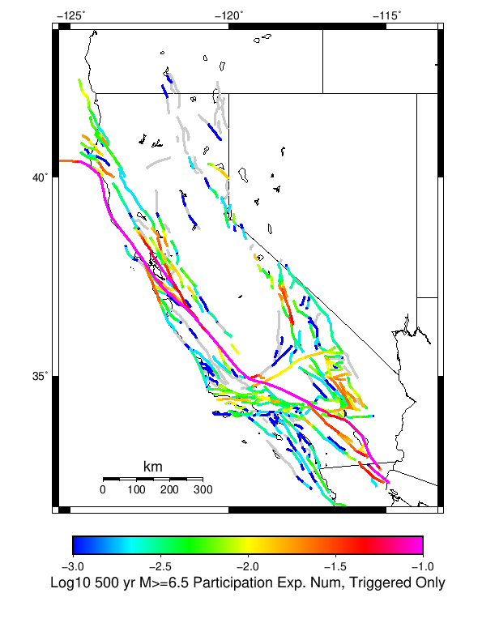
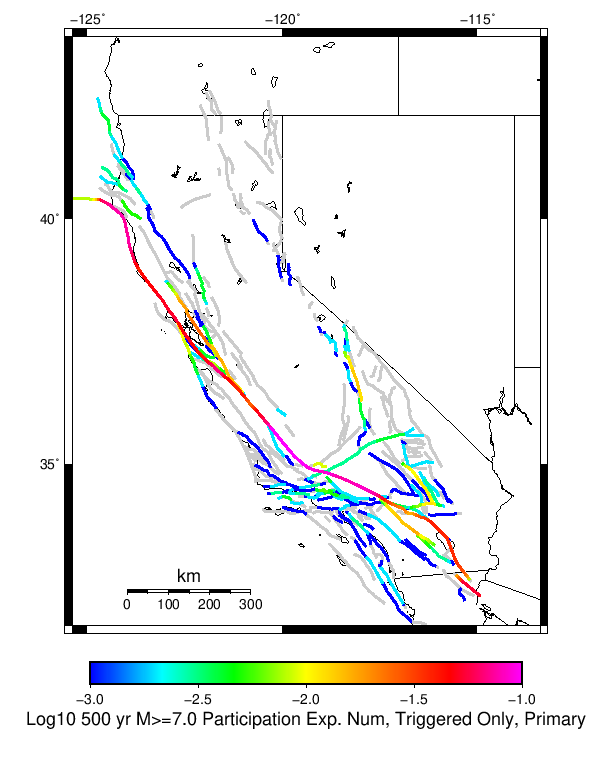
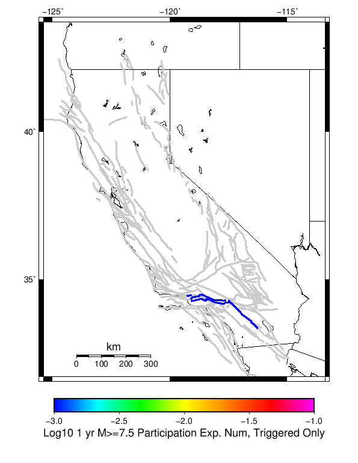
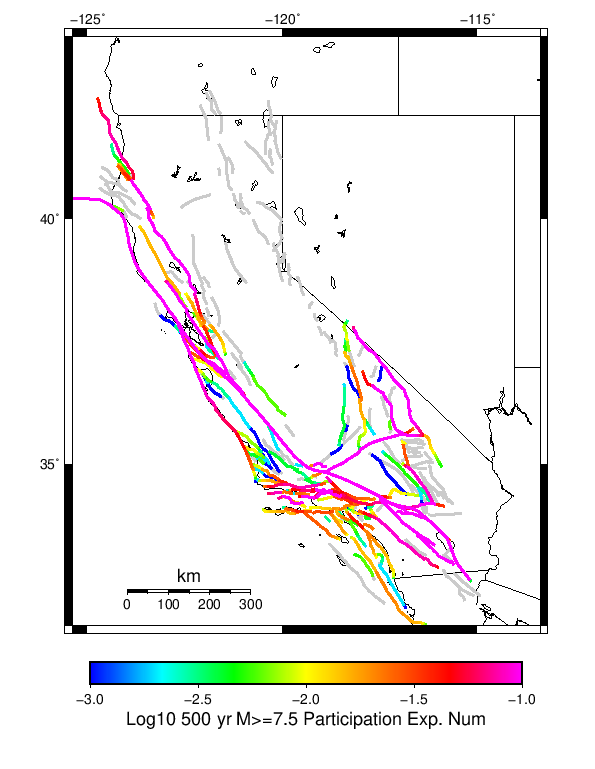
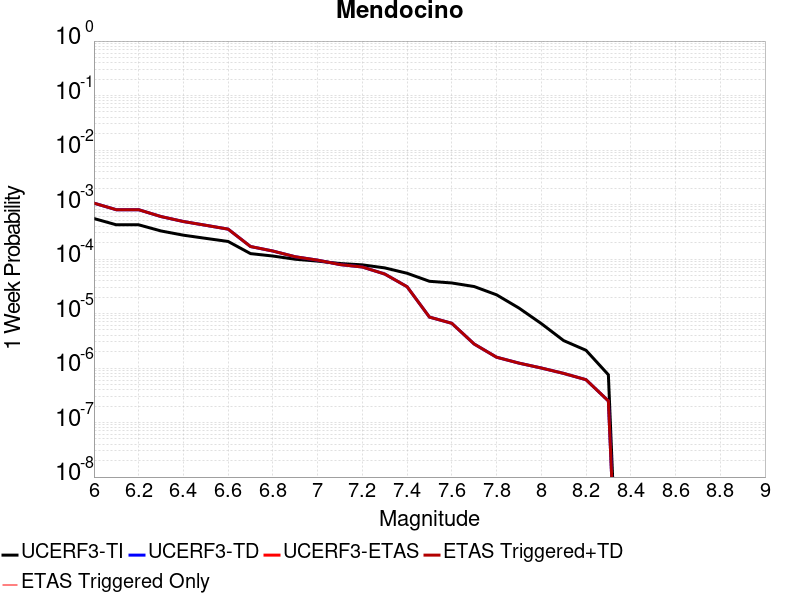
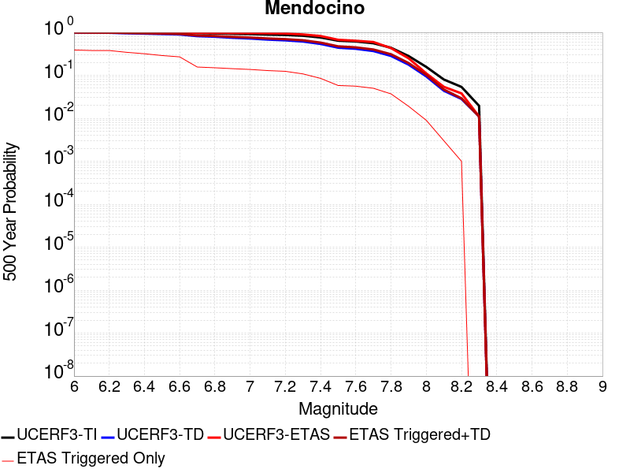
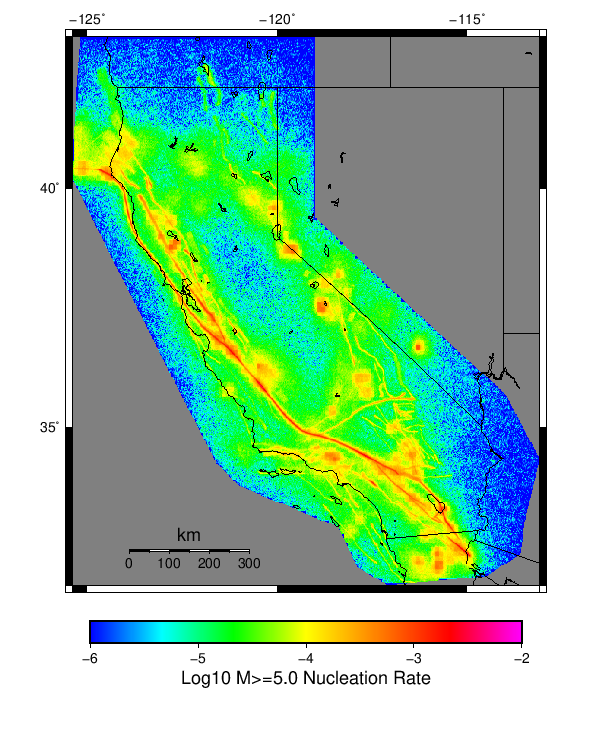

Start 2012, 500 yr, kCOV=1.5, Spontaneous, Historical Catalog Results
| Start 2012, 500 yr, kCOV=1.5, Spontaneous, Historical Catalog |
|---|
| Num Simulations | 773 (incomplete) |
| Start Time | 2012/01/01 00:00:00 UTC |
| Start Time Epoch Milliseconds | 1325376000000 |
| Duration | 500 Years |
| Includes Spontaneous? | true |
| Trigger Ruptures | (none) |
| Trigger Ruptures | 60366 Trigger Ruptures |
| First: M7.3 at 1852/01/05 04:40:39 UTC |
| Last: M3.2 at 2011/12/31 19:14:44 UTC |
| Largest: M7.9 at 1857/01/09 16:25:39 UTC |
| Config Generated With | u3etas_config_builder.sh --start-year 2012 --num-simulations 1000 --duration-years 500 --include-spontaneous --historical-catalog --etas-k-cov 1.5 --random-seed 123456789 --hpc-site USC_HPC --nodes 36 --hours 24 --queue scec |
Table Of Contents
Hazard Change Over Time
(top)
These plots show how the probability of ruptures of various magnitudes within 100km of any scenario rupture changes over time
M≥5.0 Hazard Change Over Time
(top)
| Forecast Duration | UCERF3-ETAS [95% Conf] | UCERF3-ETAS Triggered Only | UCERF3-TD | UCERF3-ETAS/TD Gain | UCERF3-TI |
|---|
| 1 Hour | 2.29E-3 [1.07E-3 - 9.35E-3] | 1.29E-3 | 9.99E-4 | 2.29 | 9.82E-4 |
| 1 Day | 0.031 [0.027 - 0.041] | 7.76E-3 | 0.024 | 1.32 | 0.023 |
| 1 Week | 0.187 [0.177 - 0.202] | 0.039 | 0.155 | 1.21 | 0.152 |
| 1 Month | 0.567 [0.557 - 0.579] | 0.111 | 0.513 | 1.11 | 0.507 |
| 1 Year | 1.000 [1.000 - 1.000] | 0.706 | 1.000 | 1 | 1.000 |
| 10 Years | 1.000 [1.000 - 1.000] | 1.000 | 1.000 | 1 | 1.000 |
| 30 Years | 1.000 [1.000 - 1.000] | 1.000 | 1.000 | 1 | 1.000 |
| 100 Years | 1.000 [1.000 - 1.000] | 1.000 | 1.000 | 1 | 1.000 |
M≥6.0 Hazard Change Over Time
(top)

| Forecast Duration | UCERF3-ETAS [95% Conf] | UCERF3-ETAS Triggered Only | UCERF3-TD | UCERF3-ETAS/TD Gain | UCERF3-TI |
|---|
| 1 Hour | 1.13E-4 [1.13E-4 - 6.28E-3] | 0.000 | 1.13E-4 | 1 | 9.74E-5 |
| 1 Day | 4.00E-3 [2.77E-3 - 0.011] | 1.29E-3 | 2.71E-3 | 1.48 | 2.33E-3 |
| 1 Week | 0.023 [0.020 - 0.031] | 3.88E-3 | 0.019 | 1.2 | 0.016 |
| 1 Month | 0.088 [0.083 - 0.098] | 0.010 | 0.078 | 1.12 | 0.068 |
| 1 Year | 0.672 [0.664 - 0.681] | 0.118 | 0.628 | 1.07 | 0.574 |
| 10 Years | 1.000 [1.000 - 1.000] | 0.573 | 1.000 | 1 | 1.000 |
| 30 Years | 1.000 [1.000 - 1.000] | 0.847 | 1.000 | 1 | 1.000 |
| 100 Years | 1.000 [1.000 - 1.000] | 0.978 | 1.000 | 1 | 1.000 |
M≥7.0 Hazard Change Over Time
(top)

| Forecast Duration | UCERF3-ETAS [95% Conf] | UCERF3-ETAS Triggered Only | UCERF3-TD | UCERF3-ETAS/TD Gain | UCERF3-TI |
|---|
| 1 Hour | 1.12E-5 [1.12E-5 - 6.18E-3] | 0.000 | 1.12E-5 | 1 | 9.08E-6 |
| 1 Day | 2.68E-4 [2.68E-4 - 6.43E-3] | 0.000 | 2.68E-4 | 1 | 2.18E-4 |
| 1 Week | 1.87E-3 [1.87E-3 - 8.03E-3] | 0.000 | 1.87E-3 | 1 | 1.52E-3 |
| 1 Month | 8.00E-3 [8.00E-3 - 0.014] | 0.000 | 8.00E-3 | 1 | 6.52E-3 |
| 1 Year | 0.107 [0.101 - 0.118] | 0.016 | 0.093 | 1.15 | 0.076 |
| 10 Years | 0.651 [0.645 - 0.659] | 0.071 | 0.625 | 1.04 | 0.549 |
| 30 Years | 0.956 [0.955 - 0.958] | 0.175 | 0.947 | 1.01 | 0.908 |
| 100 Years | 1.000 [1.000 - 1.000] | 0.366 | 1.000 | 1 | 1.000 |
M≥8.0 Hazard Change Over Time
(top)

| Forecast Duration | UCERF3-ETAS [95% Conf] | UCERF3-ETAS Triggered Only | UCERF3-TD | UCERF3-ETAS/TD Gain | UCERF3-TI |
|---|
| 1 Hour | 2.61E-7 [2.61E-7 - 6.17E-3] | 0.000 | 2.61E-7 | 1 | 2.20E-7 |
| 1 Day | 6.27E-6 [6.27E-6 - 6.17E-3] | 0.000 | 6.27E-6 | 1 | 5.27E-6 |
| 1 Week | 4.39E-5 [4.39E-5 - 6.21E-3] | 0.000 | 4.39E-5 | 1 | 3.69E-5 |
| 1 Month | 1.88E-4 [1.88E-4 - 6.35E-3] | 0.000 | 1.88E-4 | 1 | 1.58E-4 |
| 1 Year | 2.29E-3 [2.29E-3 - 8.44E-3] | 0.000 | 2.29E-3 | 1 | 1.92E-3 |
| 10 Years | 0.024 [0.024 - 0.030] | 0.000 | 0.024 | 1 | 0.019 |
| 30 Years | 0.082 [0.079 - 0.090] | 3.88E-3 | 0.078 | 1.05 | 0.056 |
| 100 Years | 0.278 [0.275 - 0.286] | 9.06E-3 | 0.272 | 1.02 | 0.175 |
Section Participation
(top)
Section Participation Plots
(top)
| Min Mag | 1 yr Complete Catalog (including spontaneous) | 1 yr Triggered Ruptures (no spontaneous) | 500 yr Complete Catalog (including spontaneous) | 500 yr Triggered Ruptures (no spontaneous) | 500 yr Triggered Ruptures (primary aftershocks only) |
|---|
| All Supra. Seis. |  |  |  | | |
| M≥6.5 |  |  |  |  | |
| M≥7 |  |  | |  |  |
| M≥7.5 |  |  |  |  |  |
| M≥8 | |  |  |  |  |
Supra-Seismogenic Parent Sections Table
(top)
First 10 of 313 with matching ruptures shown
| Parent Name | Total 500 Year Mean Count | Total 1 Day Prob | Total 1 Week Prob | Total 1 Month Prob | Total 1 Year Prob | Total 500 Year Prob | Triggered 500 Year Mean Count | Triggered 1 Day Prob | Triggered 1 Week Prob | Triggered 1 Month Prob | Triggered 1 Year Prob | Triggered 500 Year Prob | Triggered 500 Year Primary Mean Count |
|---|
| San Andreas (Parkfield) | 21.157827 | 0.0 | 0.0 | 0.0 | 0.018111255 | 1.0 | 2.0323415 | 0.0 | 0.0 | 0.0 | 0.0051746443 | 0.71280724 | 0.8499353 |
| San Andreas (Creeping Section) 2011 CFM | 13.909444 | 0.0 | 0.0 | 0.0038809832 | 0.041397154 | 1.0 | 0.5446313 | 0.0 | 0.0 | 0.0038809832 | 0.01164295 | 0.35705045 | 0.22768435 |
| San Andreas (Mojave S) | 9.417852 | 0.0 | 0.0 | 0.0 | 0.016817594 | 1.0 | 0.82276845 | 0.0 | 0.0 | 0.0 | 0.0025873221 | 0.3182406 | 0.3221216 |
| Mendocino | 8.910737 | 0.0 | 0.0 | 0.0 | 0.025873221 | 1.0 | 0.5653299 | 0.0 | 0.0 | 0.0 | 0.0077619664 | 0.37904269 | 0.2858991 |
| Cerro Prieto | 6.7153945 | 0.0012936611 | 0.0012936611 | 0.0025873221 | 0.0232859 | 1.0 | 0.38680467 | 0.0012936611 | 0.0012936611 | 0.0012936611 | 0.01164295 | 0.23027167 | 0.12160414 |
| Imperial | 5.931436 | 0.0 | 0.0 | 0.0 | 0.012936611 | 1.0 | 0.29495472 | 0.0 | 0.0 | 0.0 | 0.0025873221 | 0.23156533 | 0.13971539 |
| Brawley (Seismic Zone) alt 1 | 5.549806 | 0.0 | 0.0 | 0.0 | 0.015523933 | 1.0 | 0.23803364 | 0.0 | 0.0 | 0.0 | 0.0025873221 | 0.19534282 | 0.106080204 |
| Hayward (So) 2011 CFM | 4.7412677 | 0.0 | 0.0 | 0.0 | 0.0064683054 | 1.0 | 0.2858991 | 0.0 | 0.0 | 0.0 | 0.0 | 0.20310478 | 0.11901682 |
| San Andreas (Offshore) 2011 CFM | 4.148771 | 0.0 | 0.0 | 0.0 | 0.0025873221 | 1.0 | 0.42043984 | 0.0 | 0.0 | 0.0 | 0.0 | 0.27425614 | 0.19404916 |
| Elsinore (Glen Ivy) rev | 4.031048 | 0.0 | 0.0 | 0.0 | 0.014230272 | 0.9844761 | 0.1461837 | 0.0 | 0.0 | 0.0 | 0.0025873221 | 0.08408797 | 0.038809832 |
M≥6.5 Parent Sections Table
(top)
First 10 of 306 with matching ruptures shown
| Parent Name | Total 500 Year Mean Count | Total 1 Day Prob | Total 1 Week Prob | Total 1 Month Prob | Total 1 Year Prob | Total 500 Year Prob | Triggered 500 Year Mean Count | Triggered 1 Day Prob | Triggered 1 Week Prob | Triggered 1 Month Prob | Triggered 1 Year Prob | Triggered 500 Year Prob | Triggered 500 Year Primary Mean Count |
|---|
| Cerro Prieto | 5.7115135 | 0.0012936611 | 0.0012936611 | 0.0025873221 | 0.020698577 | 1.0 | 0.33764553 | 0.0012936611 | 0.0012936611 | 0.0012936611 | 0.01164295 | 0.21733506 | 0.11125485 |
| San Andreas (Creeping Section) 2011 CFM | 5.4514875 | 0.0 | 0.0 | 0.0 | 0.014230272 | 1.0 | 0.28719276 | 0.0 | 0.0 | 0.0 | 0.0038809832 | 0.22509703 | 0.12548512 |
| Mendocino | 4.5756793 | 0.0 | 0.0 | 0.0 | 0.010349289 | 0.99870634 | 0.3751617 | 0.0 | 0.0 | 0.0 | 0.0025873221 | 0.28331178 | 0.18369988 |
| Imperial | 4.133247 | 0.0 | 0.0 | 0.0 | 0.0090556275 | 1.0 | 0.19016817 | 0.0 | 0.0 | 0.0 | 0.0012936611 | 0.1591203 | 0.086675294 |
| Hayward (So) 2011 CFM | 4.045278 | 0.0 | 0.0 | 0.0 | 0.0051746443 | 0.99870634 | 0.23415264 | 0.0 | 0.0 | 0.0 | 0.0 | 0.17464425 | 0.09702458 |
| Brawley (Seismic Zone) alt 1 | 3.9637775 | 0.0 | 0.0 | 0.0 | 0.0090556275 | 1.0 | 0.17723157 | 0.0 | 0.0 | 0.0 | 0.0012936611 | 0.15006468 | 0.07373868 |
| San Andreas (Mojave S) | 3.5536869 | 0.0 | 0.0 | 0.0 | 0.0077619664 | 0.99870634 | 0.24579561 | 0.0 | 0.0 | 0.0 | 0.0 | 0.17335059 | 0.10866753 |
| San Andreas (Santa Cruz Mts) 2011 CFM | 3.4566624 | 0.0 | 0.0 | 0.0 | 0.0038809832 | 1.0 | 0.24062096 | 0.0 | 0.0 | 0.0 | 0.0012936611 | 0.19663648 | 0.112548515 |
| San Andreas (San Bernardino N) | 3.3272963 | 0.0 | 0.0 | 0.0 | 0.0064683054 | 0.99482536 | 0.16688228 | 0.0 | 0.0 | 0.0 | 0.0 | 0.12807244 | 0.06209573 |
| San Andreas (Cholame) rev | 3.0478654 | 0.0 | 0.0 | 0.0 | 0.0077619664 | 1.0 | 0.26649418 | 0.0 | 0.0 | 0.0 | 0.0012936611 | 0.20181112 | 0.12677878 |
M≥7 Parent Sections Table
(top)
First 10 of 273 with matching ruptures shown
| Parent Name | Total 500 Year Mean Count | Total 1 Day Prob | Total 1 Week Prob | Total 1 Month Prob | Total 1 Year Prob | Total 500 Year Prob | Triggered 500 Year Mean Count | Triggered 1 Day Prob | Triggered 1 Week Prob | Triggered 1 Month Prob | Triggered 1 Year Prob | Triggered 500 Year Prob | Triggered 500 Year Primary Mean Count |
|---|
| San Andreas (Creeping Section) 2011 CFM | 3.4385512 | 0.0 | 0.0 | 0.0 | 0.0051746443 | 0.9935317 | 0.20957309 | 0.0 | 0.0 | 0.0 | 0.0012936611 | 0.17981888 | 0.09702458 |
| San Andreas (Cholame) rev | 2.8680465 | 0.0 | 0.0 | 0.0 | 0.0051746443 | 1.0 | 0.24450193 | 0.0 | 0.0 | 0.0 | 0.0 | 0.19146183 | 0.11901682 |
| San Andreas (Carrizo) rev | 2.858991 | 0.0 | 0.0 | 0.0 | 0.0064683054 | 1.0 | 0.23285899 | 0.0 | 0.0 | 0.0 | 0.0 | 0.18240622 | 0.11513583 |
| San Andreas (Santa Cruz Mts) 2011 CFM | 2.7335057 | 0.0 | 0.0 | 0.0 | 0.0038809832 | 0.99482536 | 0.17335059 | 0.0 | 0.0 | 0.0 | 0.0012936611 | 0.14877102 | 0.076326005 |
| San Andreas (Mojave S) | 2.694696 | 0.0 | 0.0 | 0.0 | 0.0077619664 | 0.9974127 | 0.1927555 | 0.0 | 0.0 | 0.0 | 0.0 | 0.15265201 | 0.09443726 |
| San Andreas (Mojave N) | 2.530401 | 0.0 | 0.0 | 0.0 | 0.0064683054 | 1.0 | 0.18758085 | 0.0 | 0.0 | 0.0 | 0.0 | 0.15523933 | 0.08926261 |
| San Andreas (San Bernardino N) | 2.3635187 | 0.0 | 0.0 | 0.0 | 0.0051746443 | 0.9805951 | 0.13065977 | 0.0 | 0.0 | 0.0 | 0.0 | 0.113842174 | 0.055627424 |
| San Andreas (Big Bend) | 2.354463 | 0.0 | 0.0 | 0.0 | 0.0051746443 | 0.99482536 | 0.19016817 | 0.0 | 0.0 | 0.0 | 0.0 | 0.1591203 | 0.0931436 |
| San Andreas (North Coast) 2011 CFM | 2.3104787 | 0.0 | 0.0 | 0.0 | 0.0012936611 | 0.996119 | 0.17205693 | 0.0 | 0.0 | 0.0 | 0.0 | 0.1461837 | 0.07891332 |
| San Andreas (Parkfield) | 2.1901681 | 0.0 | 0.0 | 0.0 | 0.0025873221 | 0.95860285 | 0.17205693 | 0.0 | 0.0 | 0.0 | 0.0 | 0.14747736 | 0.08279431 |
M≥7.5 Parent Sections Table
(top)
First 10 of 205 with matching ruptures shown
| Parent Name | Total 500 Year Mean Count | Total 1 Day Prob | Total 1 Week Prob | Total 1 Month Prob | Total 1 Year Prob | Total 500 Year Prob | Triggered 500 Year Mean Count | Triggered 1 Day Prob | Triggered 1 Week Prob | Triggered 1 Month Prob | Triggered 1 Year Prob | Triggered 500 Year Prob | Triggered 500 Year Primary Mean Count |
|---|
| San Andreas (Mojave N) | 2.465718 | 0.0 | 0.0 | 0.0 | 0.0064683054 | 1.0 | 0.1862872 | 0.0 | 0.0 | 0.0 | 0.0 | 0.15394567 | 0.08926261 |
| San Andreas (Big Bend) | 2.2729626 | 0.0 | 0.0 | 0.0 | 0.0051746443 | 0.99482536 | 0.18499354 | 0.0 | 0.0 | 0.0 | 0.0 | 0.15523933 | 0.09055627 |
| San Andreas (Mojave S) | 2.2225096 | 0.0 | 0.0 | 0.0 | 0.0051746443 | 0.99482536 | 0.15394567 | 0.0 | 0.0 | 0.0 | 0.0 | 0.1293661 | 0.077619664 |
| San Andreas (Carrizo) rev | 2.137128 | 0.0 | 0.0 | 0.0 | 0.0051746443 | 0.9896507 | 0.17335059 | 0.0 | 0.0 | 0.0 | 0.0 | 0.1461837 | 0.08796895 |
| San Andreas (Cholame) rev | 2.041397 | 0.0 | 0.0 | 0.0 | 0.0038809832 | 0.9844761 | 0.1694696 | 0.0 | 0.0 | 0.0 | 0.0 | 0.14359638 | 0.08538163 |
| San Andreas (San Bernardino N) | 1.8382924 | 0.0 | 0.0 | 0.0 | 0.0051746443 | 0.94566625 | 0.10219923 | 0.0 | 0.0 | 0.0 | 0.0 | 0.09055627 | 0.045278136 |
| San Andreas (North Coast) 2011 CFM | 1.8318241 | 0.0 | 0.0 | 0.0 | 0.0 | 0.98576975 | 0.12419146 | 0.0 | 0.0 | 0.0 | 0.0 | 0.113842174 | 0.053040102 |
| San Andreas (Creeping Section) 2011 CFM | 1.7335058 | 0.0 | 0.0 | 0.0 | 0.0012936611 | 0.89391977 | 0.11772316 | 0.0 | 0.0 | 0.0 | 0.0 | 0.11125485 | 0.054333765 |
| San Andreas (Parkfield) | 1.5666236 | 0.0 | 0.0 | 0.0 | 0.0025873221 | 0.8978008 | 0.11125485 | 0.0 | 0.0 | 0.0 | 0.0 | 0.0996119 | 0.053040102 |
| San Andreas (Peninsula) 2011 CFM | 1.5071151 | 0.0 | 0.0 | 0.0 | 0.0 | 0.9262613 | 0.09831824 | 0.0 | 0.0 | 0.0 | 0.0 | 0.09055627 | 0.043984476 |
M≥8 Parent Sections Table
(top)
First 10 of 61 with matching ruptures shown
| Parent Name | Total 500 Year Mean Count | Total 1 Day Prob | Total 1 Week Prob | Total 1 Month Prob | Total 1 Year Prob | Total 500 Year Prob | Triggered 500 Year Mean Count | Triggered 1 Day Prob | Triggered 1 Week Prob | Triggered 1 Month Prob | Triggered 1 Year Prob | Triggered 500 Year Prob | Triggered 500 Year Primary Mean Count |
|---|
| San Andreas (Mojave N) | 0.6882277 | 0.0 | 0.0 | 0.0 | 0.0 | 0.5549806 | 0.038809832 | 0.0 | 0.0 | 0.0 | 0.0 | 0.03751617 | 0.019404916 |
| San Andreas (Big Bend) | 0.68564034 | 0.0 | 0.0 | 0.0 | 0.0 | 0.5510996 | 0.038809832 | 0.0 | 0.0 | 0.0 | 0.0 | 0.03751617 | 0.019404916 |
| San Andreas (Carrizo) rev | 0.68564034 | 0.0 | 0.0 | 0.0 | 0.0 | 0.5510996 | 0.038809832 | 0.0 | 0.0 | 0.0 | 0.0 | 0.03751617 | 0.019404916 |
| San Andreas (Cholame) rev | 0.67917204 | 0.0 | 0.0 | 0.0 | 0.0 | 0.5472186 | 0.041397154 | 0.0 | 0.0 | 0.0 | 0.0 | 0.04010349 | 0.019404916 |
| San Andreas (Mojave S) | 0.6778784 | 0.0 | 0.0 | 0.0 | 0.0 | 0.54980594 | 0.038809832 | 0.0 | 0.0 | 0.0 | 0.0 | 0.03751617 | 0.019404916 |
| San Andreas (San Bernardino N) | 0.6494179 | 0.0 | 0.0 | 0.0 | 0.0 | 0.53040105 | 0.03751617 | 0.0 | 0.0 | 0.0 | 0.0 | 0.03622251 | 0.018111255 |
| San Andreas (Parkfield) | 0.58990943 | 0.0 | 0.0 | 0.0 | 0.0 | 0.4877102 | 0.033635188 | 0.0 | 0.0 | 0.0 | 0.0 | 0.032341525 | 0.015523933 |
| San Andreas (Creeping Section) 2011 CFM | 0.5316947 | 0.0 | 0.0 | 0.0 | 0.0 | 0.44631305 | 0.03622251 | 0.0 | 0.0 | 0.0 | 0.0 | 0.034928847 | 0.018111255 |
| San Andreas (Santa Cruz Mts) 2011 CFM | 0.36998707 | 0.0 | 0.0 | 0.0 | 0.0 | 0.32858992 | 0.021992238 | 0.0 | 0.0 | 0.0 | 0.0 | 0.021992238 | 0.0077619664 |
| San Andreas (Peninsula) 2011 CFM | 0.3182406 | 0.0 | 0.0 | 0.0 | 0.0 | 0.2923674 | 0.016817594 | 0.0 | 0.0 | 0.0 | 0.0 | 0.016817594 | 0.0064683054 |
Fault Magnitude-Probability Distributions
(top)
The first 5 sections (sorted by trigger rate) are plotted below. All fault MPDs are available here
| 1 Week | 1 Month | 1 Year | 500 Year |
|---|
 |  |  |  |
 |  |  |  |
|  |  |  |  |
 |  |  |  |
 |  |  |  |
Gridded Nucleation
(top)
| Min Mag | Complete Catalog (including spontaneous) | Triggered Ruptures (no spontaneous) | Triggered Ruptures (primary aftershocks only) |
|---|
| M≥5 |  |  |  |
| M≥6 |  |  |  |
| M≥7 |  |  |  |
(top)
{
"numSimulations": 1000,
"duration": 500.0,
"startYear": 2012,
"includeSpontaneous": true,
"randomSeed": 123456789,
"binaryOutput": true,
"binaryOutputFilters": [
{
"prefix": "results_complete",
"descendantsOnly": false
},
{
"prefix": "results_m5_preserve_chain",
"minMag": 5.0,
"preserveChainBelowMag": true,
"descendantsOnly": false
},
{
"prefix": "results_triggered_descendants",
"descendantsOnly": true
}
],
"forceRecalc": false,
"simulationName": "Start 2012, 500 yr, kCOV\u003d1.5, Spontaneous, Historical Catalog",
"numRetries": 3,
"outputDir": "${ETAS_SIM_DIR}/2019_10_29-Start2012_500yr_kCOV1p5_Spontaneous_HistoricalCatalog",
"triggerCatalog": "${ETAS_LAUNCHER}/inputs/u3_historical_catalog.txt",
"triggerCatalogSurfaceMappings": "${ETAS_LAUNCHER}/inputs/u3_historical_catalog_finite_fault_mappings.xml",
"treatTriggerCatalogAsSpontaneous": false,
"cacheDir": "${ETAS_LAUNCHER}/inputs/cache_fm3p1_ba",
"fssFile": "${ETAS_LAUNCHER}/inputs/2013_05_10-ucerf3p3-production-10runs_COMPOUND_SOL_FM3_1_SpatSeisU3_MEAN_BRANCH_AVG_SOL.zip",
"probModel": "FULL_TD",
"applySubSeisForSupraNucl": true,
"totRateScaleFactor": 1.14,
"gridSeisCorr": true,
"timeIndependentERF": false,
"griddedOnly": false,
"imposeGR": false,
"includeIndirectTriggering": true,
"gridSeisDiscr": 0.1,
"catalogCompletenessModel": "RELAXED",
"etas_k_cov": 1.5,
"configCommand": "u3etas_config_builder.sh --start-year 2012 --num-simulations 1000 --duration-years 500 --include-spontaneous --historical-catalog --etas-k-cov 1.5 --random-seed 123456789 --hpc-site USC_HPC --nodes 36 --hours 24 --queue scec",
"configTime": 1572354013349
}